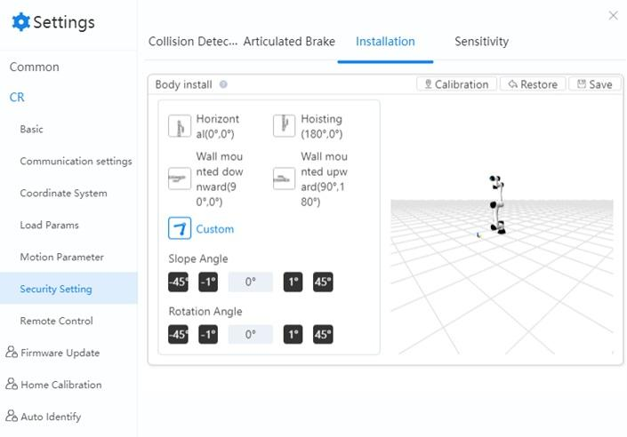

Installation
If the robot is mounted on a flat table or floor, you do not need to configure anything in this page. However, if the robot is ceiling mounted, wall mounted, or mounted at an angle, you need to set the rotation angle and slop angle when the robot is disabled.
Select the installation posture based on the robot’s installation. Alternatively, after installing and enabling the robot, you can also click Calibration and follow the directions in the pop-up box to automatically obtain the tilt angle and rotation angle.
- Slop angle is the counter-clockwise rotation around the robot’s X-axis.
- Rotation angle is the counter-clockwise rotation around the robot’s Z-axis.
- Click Save after calibration to save the settings.
- Click Restore to restore the calibrated angle to the default value.